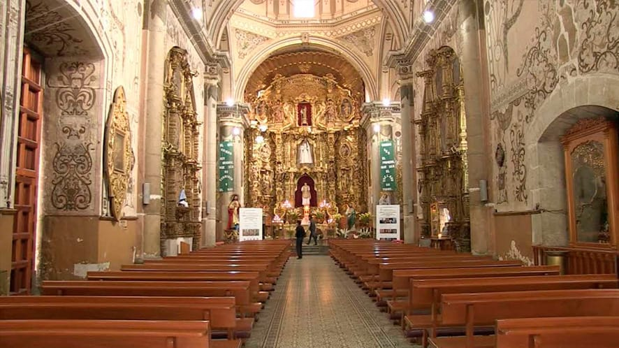
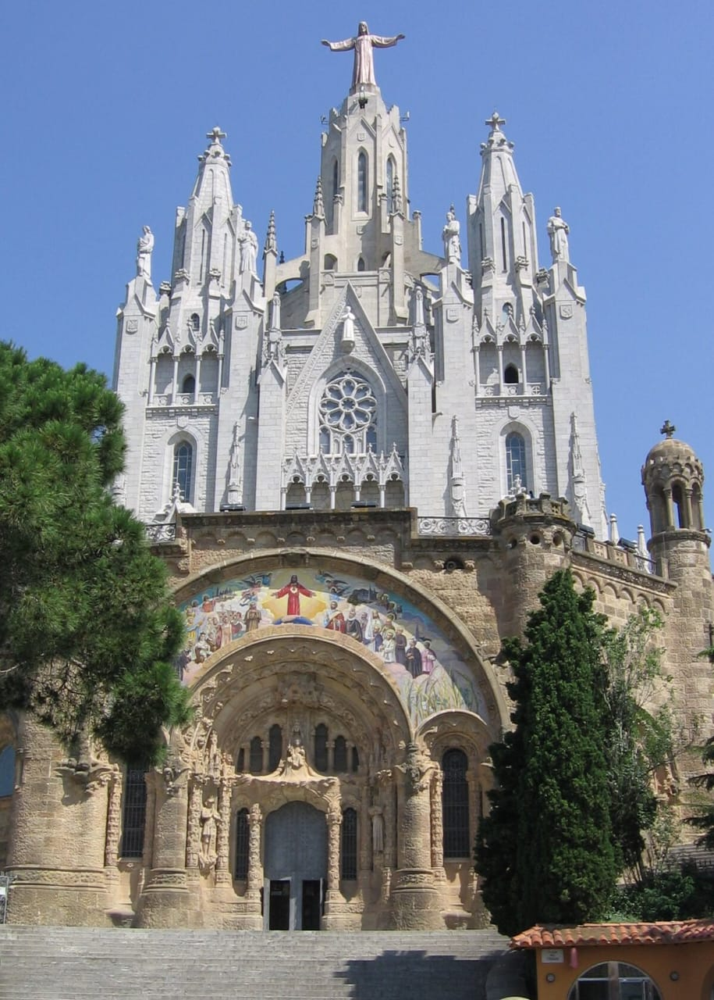
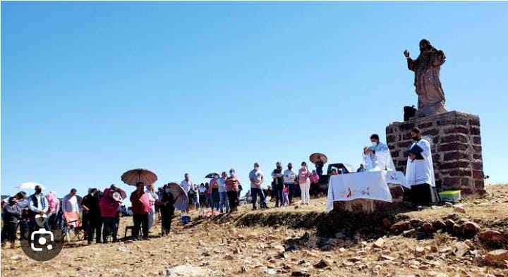

En cuquio hay varios lugares a los cuales se pueden visitar gratuitamente a continuación te presentaré algunos de ellos:
Es un templo histórico cuya construcción comenzó en 1761 y conclusiones en 1843. De estilo colonial, ha sido testigo de importantes momentos históricos como la Guerra de Independencia y la Guerra Cristera. Su fachada aún conserva marcas de bala de aquellos conflictos.
La construcción es de estilo ecléctico y es evidente que posee la influencia del neobarroco de la época del porfiriato mezclado con los detalles neoclásicos, sobre todo característicos en las columnas y contrafuertes triangulares, todo colocado de forma armónica y elegante. Su interior combina el predominante estilo neoclásico con detalles barrocos que aunque son aspectos de contrastes logran embonar con armonía
Esta imagen de Cristo Rey se venera en el templo de Teponahuasco, cerca de Cuquío. Es parte de una tradición muy arraigada en la comunidad, con peregrinaciones anuales conocidas como "la llevada" y "la arrastrada", que conmemoran una antigua leyenda relacionada con la protección del pueblo.
